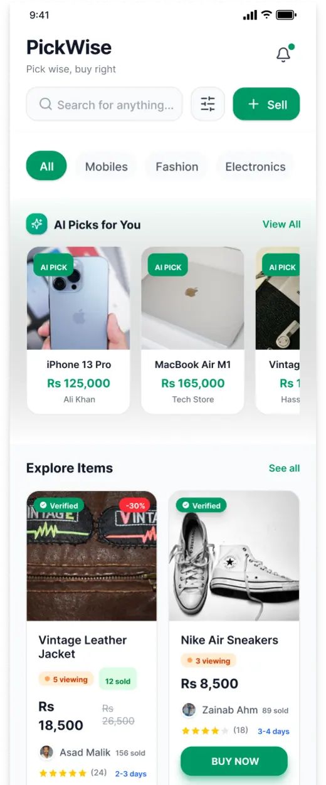
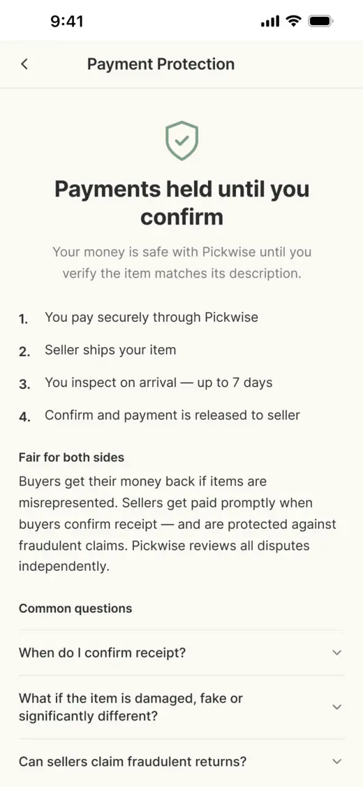
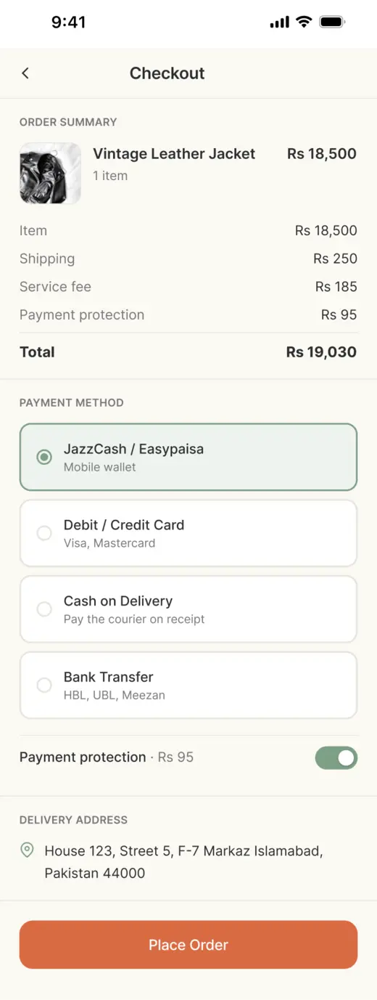
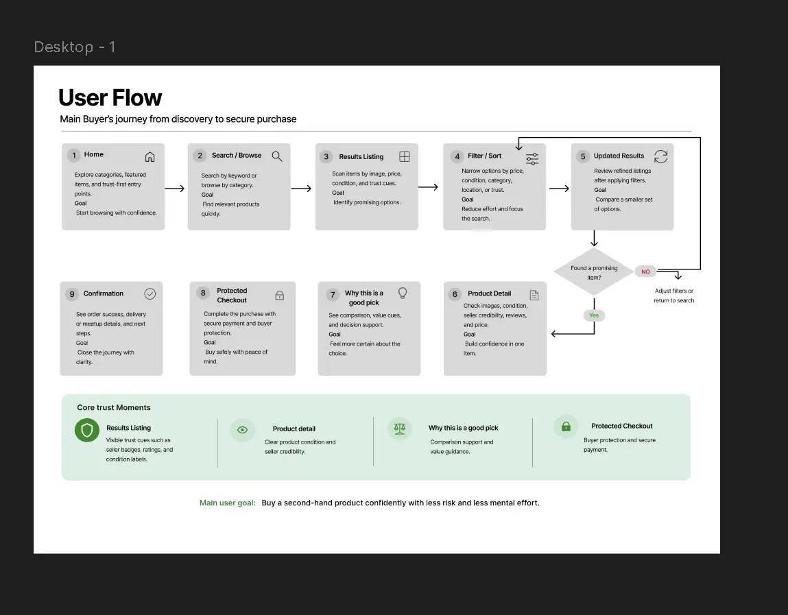

02 / Independent concept · Research & UI
Trust matters.
So does clarity.
Pickwise explores how seller information, comparison and payment protection could help buyers evaluate second-hand purchases in Pakistan.
- My role
- Solo product designer
- Timeline
- 4 weeks
- Research
- 5 moderated
prototype walkthroughs - Deliverable
- About 30 screens
across 6 flow areas


Second-hand marketplace / Mobile concept
Reassurance,
without the overload.
Second-hand buyers need to judge the item, the seller and the transaction—not just the price.
The brief focused on unclear condition information, difficult comparison and concerns about scams or payments. I reviewed Khazaany, OLX and Mercari, then designed flows, wireframes, UI and a clickable prototype.
The concept covers onboarding, browsing, negotiation, checkout and tracking, selling, and supporting screens. I prioritised the buyer journey; the seller flow remains partial. Pickwise is not a launched marketplace.
What five people
helped me see.
I ran moderated, think-aloud walkthroughs of the early prototype, focusing on the journey from product discovery to order tracking. Participants were aged 17–28: three had used OLX, and two had never bought second-hand.
They were friends and family, with consent obtained, including parental consent for one participant. This is a small convenience sample, so the findings are directional.
Found the AI banner unclear or intrusive.
One participant was neutral to positive. The issue was the prominent treatment, not unanimous rejection of AI.
Responded positively to comparison.
The other two did not comment on it; no negative response was recorded.
Found seller information reassuring.
Ratings, reviews and profiles helped participants evaluate a listing.
Needed clearer protection language.
The idea appealed, but escrow wording felt confusing or heavy.
Three wanted preferences to be requested or learned more quietly. Two found parts of the interface visually heavy. Support and returns also came up, with one participant explicitly asking for help closer to tracking.
Less emphasis on AI.
More space to browse.
The first Home screen led with a large “AI Picks for You” block. Participants questioned how the app knew their preferences and wanted more control.
I replaced it with a quieter “For you” section and added a skippable category-preference step before Home. Onboarding was shortened to three trust cues.
The change responded to the early sessions. The revised interface has not been tested again, so I cannot claim that it resolved the confusion.


Make the decision
easier to follow.
Bring comparison into one view.
The comparison table brings together price, condition, seller rating, delivery and returns, with a short recommendation. Three positive responses supported keeping comparison prominent; they do not validate every field or the recommendation logic.
Explain what happens to a payment.
“Payments held until you confirm” replaces reliance on the word “escrow”, supported by a four-step explanation and FAQs. Wallet options include JazzCash and Easypaisa. The policy still needs work: checkout makes protection optional while onboarding promises it on every purchase.
Keep support within reach.
A dedicated Help screen adds categories, FAQs and contact options. It remains under Profile; the requested entry from tracking has not been added.
Be clear about designer-led additions.
I added counter-offer cards in chat leading to checkout. Negotiation was my design choice, not a requirement established by the interviews. The proposed seller flow is also incomplete: only its first step and confirmation are designed.




The designed journey.
These recordings show the concept’s browse-to-purchase and negotiation paths. They demonstrate prototype interactions, not a live transaction system.
The open questions
are part of the story.
Four participants explicitly said they would trust or use the early concept. Given the sample and study context, that is feedback—not proof of adoption. There was no second test round.
- Protection: resolve the optional Rs 95 fee and clarify which payment methods are eligible, including cash on delivery and meetup scenarios.
- Failure paths: design disputes, returns, refunds and seller responses, including return-abuse concerns.
- Verification: define how sellers earn the badges shown in the UI.
- Incomplete states: finish the seller flow, add contextual help and prevent receipt confirmation while an order is in transit.
- Consistency: placeholder prices, order IDs and dates vary across screens. Shared components and sample data need a pass.
Next I would test comparison and checkout with a new task-based prototype. Early dead taps interrupted the sessions, so likely interaction paths need to work before testing.
My main learning: feedback should be able to change a product’s emphasis. For a trust-focused product, the failure paths deserve attention as early as the purchase flow.
Research-to-design decision log
| Evidence | Response | Status |
|---|---|---|
| 4 of 5 negative about AI banner | Quieter feed and category preferences | Designed; not re-tested |
| 3 of 5 positive about comparison | Structured comparison view | Designed |
| 4 of 5 reassured by seller information | Seller profiles and ratings | Verification process missing |
| 3 of 5 unclear about protection wording | Plain-language explainer | Policy mismatch unresolved |
| 1 explicit help request; 1 related idea | Help screen | Not available from tracking |
| 2 asked for selling improvements | Photos and category first | Partial seller flow |
| Designer-led addition | Negotiation cards | Not directly research-led |

